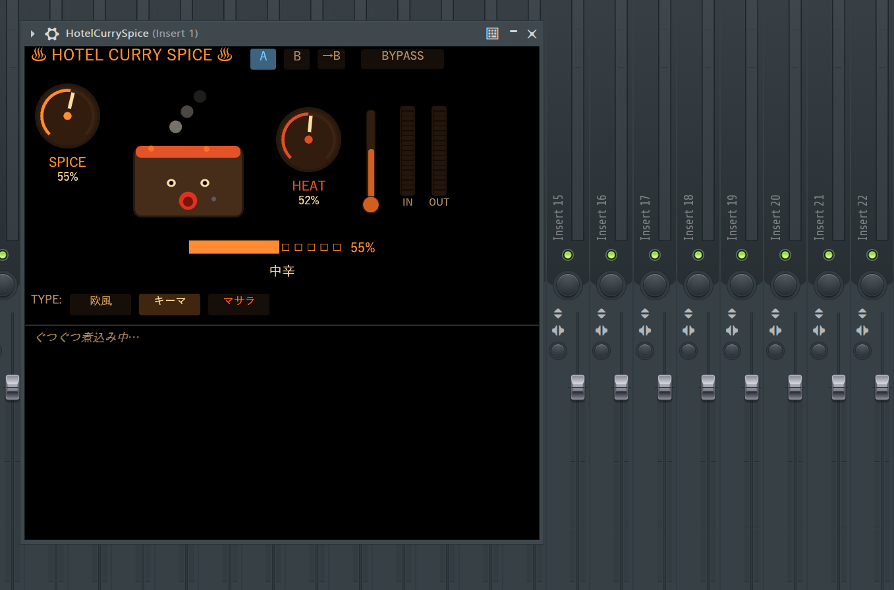

HotelCurrySpice GUI · Running in FL Studio
味の決め手
Key FeaturesSPICE
倍音の味付け量を調整。0%では入力音をそのまま通す。
HEAT
丸く濃い方向から、明るく刺激的な方向までキャラクターを動かす。
3つのカレーTYPE
欧風 / キーマ / マサラ。つまみ位置だけではない、内部の効き方そのものを選べる。
A / B比較
TYPE、SPICE、HEATをまとめて保存し、二つの味をすぐに聴き比べられる。
入出力メーター
入り口と出口のピークを見ながら、かけ具合を確認できる。
鍋キャラクター
味付け量に合わせて、表情・湯気・リアクションが変化する。
カレーTYPE三種
Curry Types🍛 欧風
丸く濃厚。低めの倍音を中心に、素材へコクを足す。
🥘 キーマ
締まりと密度。輪郭を整えて、音を前へ出す。
🌶️ マサラ
明るく複雑。上側の刺激と存在感を加える。
食べ方ガイド
Install & Usage動作環境
- Windows 10 / 11 x64
- VST3対応DAW（FL Studio / Cubase / Studio One / Reaper / Bitwig 等）
- 64-bitプラグインホスト
インストール
zipを展開すると HotelCurrySpice.vst3 フォルダが出てくる。それを次の場所へコピー：
C:\Program Files\Common Files\VST3\
その後、DAW側でVST3プラグインを再スキャン。
FL Studioの場合は Plugin Manager から Find installed plugins を実行。
基本操作
SPICE── 加える倍音の量HEAT── 丸さから刺激まで、倍音の方向を調整TYPE── 内部の倍音レシピを選択A / B── 二つの設定を保存して比較BYPASS── 効果を一時的にオフ
SPICE 0%では、HEATやTYPEに関係なく入力音をそのまま通します。
TYPEを選ぶと推奨SPICE / HEAT値も切り替わり、その後は自由に調整できます。
同梱物
HotelCurrySpice.vst3── プラグイン本体LICENSE.txt── ライセンスTHIRD_PARTY_NOTICES.txt── 第三者ライセンス全文QUICKSTART.md── 操作ガイドCHANGELOG.md── 変更履歴
Windows x64 · VST3